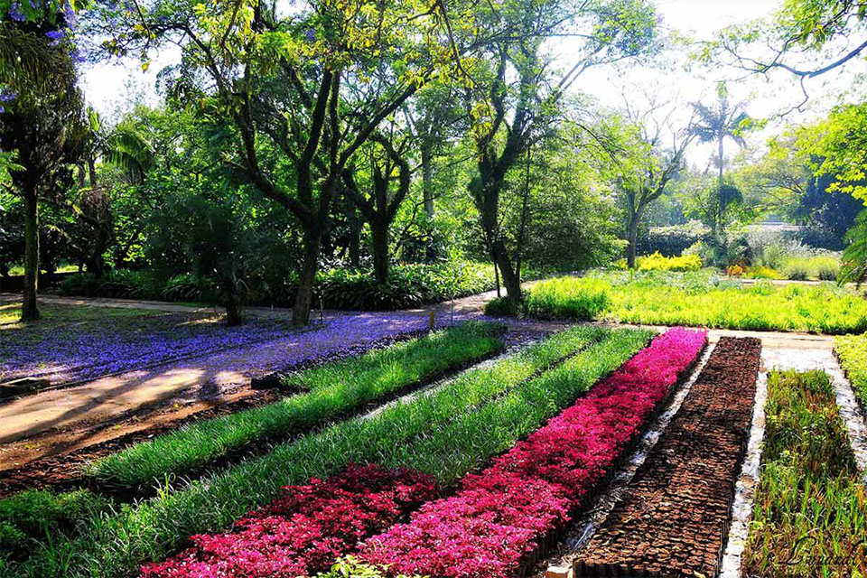

Atrações
Bicicletario
Muitas pessoas preferem o aluguel de bicicleta do que comprar uma. Por isso lançamos este post para ajudá-las a conhecer um pouco mais sobre o assunto e tomar a decisão correta.
O preço é de R$5,00 (não são aceitos cartões de débito ou crédito) por hora e o serviço funciona das 7 às 19hs de segunda a domingo.Você precisa levar apenas o documento de identidade e um comprovante de residência atual, no momento da locação você deixará um telefone pra contato também. Ah. Para sair do parque com a bicicleta alugada você precisa de uma autorização da locadora e se você for para a rua com a bike deles, não haverá qualquer tipo de assistência em caso de quebra da bike por exemplo.
Lá você encontrará bicicletas do tipo mountain bike e triciclos adaptados para deficientes, estes últimos somente com a presença de um acompanhante, é claro. Não espere encontrar bikes mistas ou urbanas, próprias pra rodar na cidade, não existe essa opção por lá, porém as bikes disponíveis possuem um certo conforto necessário pra você pedalar dentro do parque
Caminhada guiada

Caminhada com grupo de amigos e parceiros do Parque Ibirapuera Conservação com apresentação de aspectos históricos e curiosidades, conhecendo mais de 40 pontos de interesse entre equipamentos culturais e esportivos, praças, estátuas e monumentos, entre outros, dando uma visão geral do parque, visando ampliar o conhecimento do visitante e facilitar futuras visitas.
Coordenação: Aldo Cruz
Estrutura: Apresentação rápida de livros e mapas sobre o parque (5m) seguida de caminhada no parque (1h40)
Duração: 1h45 a 2h
Ponto de encontro: Bosque da Leitura ao lado do Viveiro Manequinho Lopes.
Jardim do Ibirapuera

O PARQUE IBIRAPUERA TAMBÉM É UM JARDIM BOTÂNICO
Como muitos parques urbanos ao redor do mundo, muitas vezes nascidos como jardins para recolher espécimens de plantas e árvores de várias proveniências, para o estudo e/ou deleite dos seus frequentadores, o Parque Ibirapuera, pela variedade da vegetação que abriga, também pode ser considerado um jardim botânico.
Nos 1 milhão e 584 mil metros quadrados do Parque Ibirapuera, encontram-se mais de quinhentas espécies de árvores. Isso também faz do parque um verdadeiro jardim botânico, que revela aos amantes da natureza espécies nativas e exóticas, cuidadosamente distribuídas no espaço para formar bosques, perspectivas, cheios e vazios e pontos focais, como na composição de um quadro ou de uma tapeçaria.
Planetário
Planetário Aristóteles Orsini foi o primeiro planetário do Brasil, inaugurado em janeiro de 1957 é administrado pela Prefeitura de São Paulo através da Universidade Aberta do Meio Ambiente. O prédio é importante patrimônio histórico, científico e cultural, tombado pelo Conselho Municipal de Tombamento e Preservação do Patrimônio Histórico, Cultural e Ambiental da Cidade de São Paulo (Conpresp) e pelo Conselho de Defesa do Patrimônio Histórico, Arqueológico, Artístico e Turístico do Estado (Condephaat).
No planetário funciona um projetor ultrapassado do século passado da alemã Carl Zeiss recém arrumado. Quando colocarem um projetor digital, os frequentadores poderão viajar pelo espaço. Aguardamos por este momento e nós amigos da Conservação estamos ansiosos por poder ajudar a fazer acontecer.
Serviço
Tempo da sessão:
40 minutos
Horário:
Férias escolares (Dezembro, Janeiro, Fevereiro e Julho): de quarta à domingo e feriados, 4 sessões diárias e gratuitas (10h/12h/15h/17h)
Outros meses: somente no finais de semana em 4 sessões diárias e gratuitas (10h/12h/15h/17h)
Ingressos:
Gratuito. Distruibuição 1h antes do inicio de cada sessão.
Crianças a partir de 5 anos podem entrar mediante apresentação de documento de identidade ou Certidão de Nascimento.
Museu de Arte Moderna de São Paulo – MAM
A história do Museu de Arte Moderna de São Paulo (MAM-SP) no parque, um dos primeiros museus de arte moderna da América Latina, começa durante a 5ª Bienal de São Paulo, quando Lina Bo Bardi e Martin Gonçalves idealizaram o projeto de um ambiente temporário sob a marquise para abrigar a exposição “Bahia”. Posteriormente, o espaço funcionou como depósito da bienal até virar a sede do MAM em 1968-69.
De lá para cá, o MAM-SP cresceu e possui hoje mais de 4000 obras de arte contemporânea brasileira, dentre pinturas, esculturas, gravuras, fotografias, vídeos e instalações. Modernizou, revitalizou e hoje é um dos espaços mais bem cuidados do parque. No museu há peças de Candido Portinari, Emiliano Di Cavalcanti, Tarsila do Amaral e Victor Brecheret, além instalações de Regina Silveira, Nelson Leirner e José Damasceno. Ainda assim, o espaço no Parque Ibirapuera parece pequeno para o museu que chegou a refletir sobre um possível novo espaço no parque ou em São Paulo para MAM-SP.
Sob a marquise o MAM tem duas galerias de exposição, auditório, ateliê, biblioteca, loja e restaurante. Vale uma visita neste encantador espaço no parque.
Informações:
Acesso: Av. Pedro Álvares Cabral – Portão 3
Visitação: Terça a domingo e feriados, 10h às 18h (encerramento bilheteria às 17h30). Fechado às segundas-feiras (inclusive feriados)